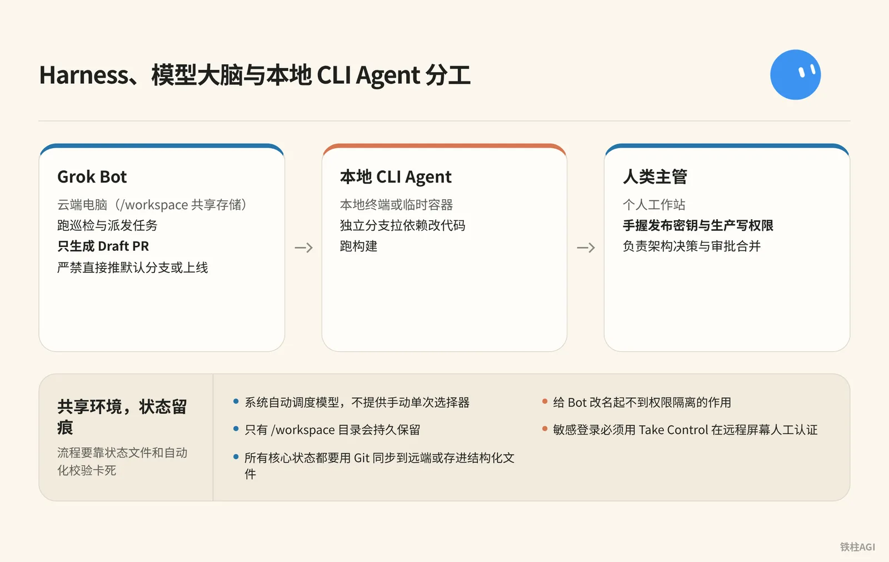
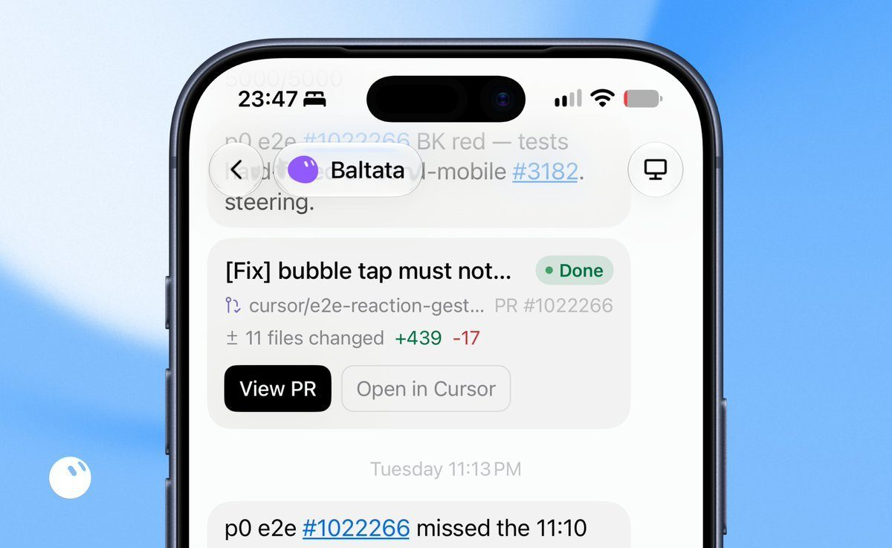
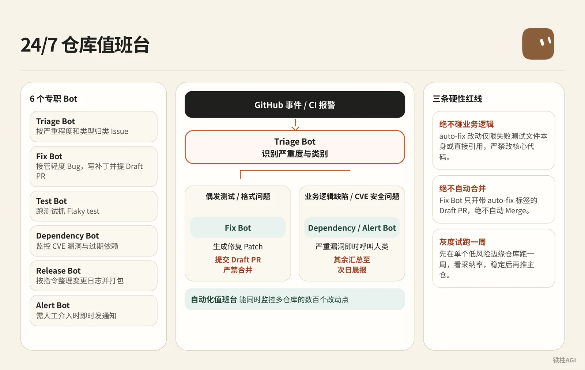
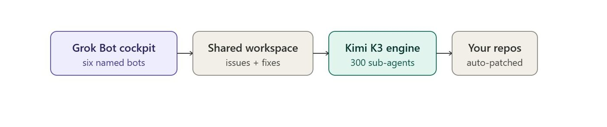
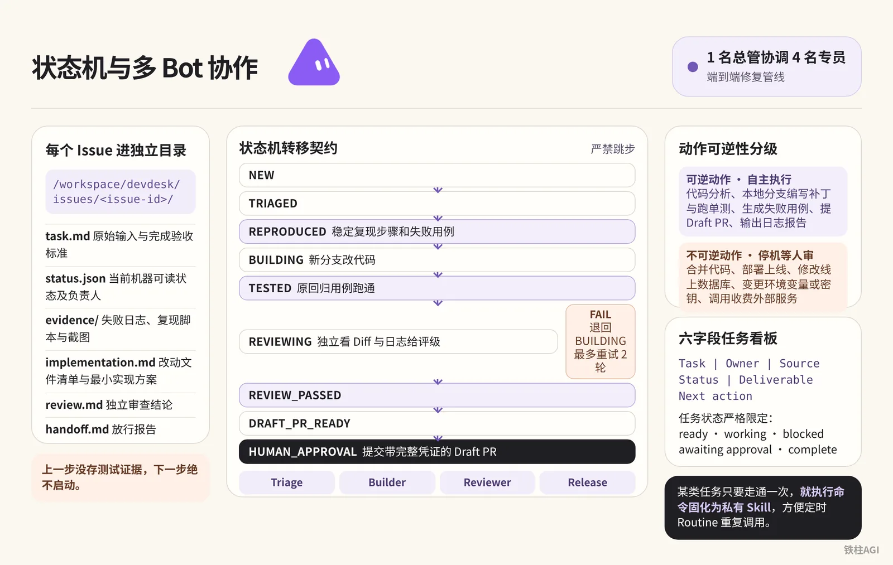
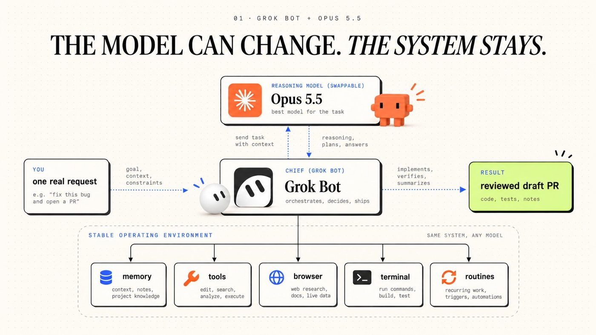
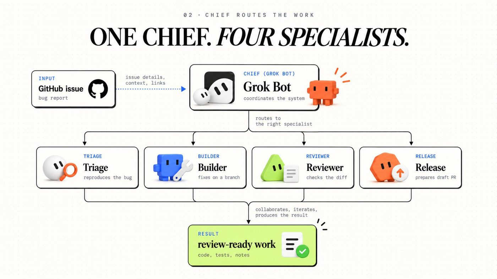

铁柱AGI · 29/60
第 14 章 案例：工程与研发团队
别在本地盯梢，把活托管到云端。
- 电脑随时关机，24 小时运转，免得凌晨两点爬起来查 CI。
- 隔离环境编码，合并请求附真实证据与日志，防断言改绿。
早晨看交付报告把关发布。
核心架构：Harness、模型大脑与本地 CLI Agent (an AI that takes steps on its own to finish a task) 分工

角色定位与三方分工
2026 年 10 月 7 日平台引入了 Claude Opus 5.5 等模型参与推理。系统自动调度模型，不提供手动单次选择器。别指望单一模型特性，流程要靠状态文件和自动化校验卡死。
| 角色 | 运行宿主 | 权限与职责 |
|---|---|---|
| Grok Bot (xAI's AI assistant that comes with its own computer) | 云端电脑（/workspace 共享存储） | 跑巡检与派发任务，只生成 Draft PR，严禁直接推默认分支或上线 |
| 本地 CLI Agent | 本地终端或临时容器 | 独立分支拉依赖改代码，跑构建 |
| 人类主管 | 个人工作站 | 手握发布密钥与生产写权限，负责架构决策与审批合并 |
环境配置与安全隔离
同账号下所有 Bot 共享同一台云电脑、命令行凭据与浏览器会话，给 Bot 改名起不到权限隔离的作用。遇到敏感登录别在对话框贴明文，必须用 Take Control 在远程屏幕人工认证，把会话留给浏览器。
运行环境自检与持久化
接入新仓库前，先在 Grok Bot 跑自检命令摸清配置。
运行环境自检与持久化
echo "CPU 核心数:"
nproc
echo "内存分配:"
free -h
echo "工作区磁盘空间:"
df -h /workspace
echo "系统版本与 Git:"
cat /etc/os-release | head -n 3
git --version更新时系统依赖可能被重置，只有 /workspace 目录会持久保留。所有核心状态都要用 Git 同步到远端或存进结构化文件。
参考文档包括 Grok Bot 官方使用指南 与 云电脑与应用连接说明。
案例一：SpaceXAI 团队的 PR 巡检与多 Bot 编排
SpaceXAI 的 Lingxi Li（@lingxi）带了 5 个研发 Bot 加 1 个流程 Bot，配 Cursor cloud agent 全天跑。
团队里的 @poteto 单月合入超 2,000 个 PR，Lingxi 自己也只花 3 周就搞定了 iOS v0。
5 个研发 Bot 隔离了上下文，各自盯一块代码，按任务调对应命令：
- Baltata 负责 iOS 与移动共享层，Craig 负责 Android。
- Shaoruru 负责桌面端与 CI/CD，Quill 维护 Harness 工具链。
- Hogan 专查底层基建与无归属 Bug。
- 视觉走
/lingxi-design，代码质量走/react-native-best-practices，架构走/lingxi-review。
主管 Bot Jenny 不写代码，每天早 5 点逐个对齐手册。研发 Bot 一旦审查放水或没彻底验证就交付，Jenny 会抓出来做 RCA 并更新规则。
长会话容易把上下文撑爆，团队把状态放进 Notion (a notes and database app) 库，靠定时轮询跑完闭环：
半小时轮询：每 30 分钟扫一遍 open PR，核验 Bugbot 结果、CI 报错和 Git 冲突。
有问题调 Cursor 修复并切回 Working，全绿切为 Ready for Review；只有置信度极高且改动影响极小时才自动合入。单人并发调度量从 15 提到了 200 个以上。
真机截图对齐：代码断言容易漏掉视觉显示问题，团队拿闲置 Mac mini 当私有 Worker 跑 iOS Simulator，靠多模态比对前后真实截图，视觉不对就直接打回。
凌晨 3 点夜间审计：清理死代码缩包，排查依赖安全和 CI 耗时，补齐国际化，检查多端功能对等，汇总过去 24 小时 PR。


别让单个 Bot 扛长会话。按业务拆角色，设专人复盘规则，把状态放到看板里做差异核对，省心很多。
案例二：研发工作拆解与 Lauren 的九类清单
具体怎么做
Lauren（@poteto）单月合并 2,500 个生产 PR，Jacob Gold（@jacobgold）日均近 250 个，两人把工程拆成九条线并行跑。
| 风险级别 | 典型范围与规则 | 审查方式 |
|---|---|---|
| 低至中 | 清理死代码、单测与类型修正 | 自动合入 |
| 高风险 | 核心业务、鉴权与数据迁移 | 强制人工审查 |
只要 Diff 超出原始提示词 (prompt (the instruction you give the AI))意图，系统立即推给人工拍板。
可以借鉴什么
Mai Yang（@MaiYangAI）半年在 ContextEcho 产生 1,020 个提交，仅 18 次走 PR。单人项目破坏面极小，缺乏真实需求时硬造 PR 毫无价值。
来源：一天几百个 PR 有什么意义？我照着 SpaceXAI 工程师 Lauren（@poteto）的九类清单，把自己的活拆了一遍
作者：Mai Yang @MaiYangAI 先选 Bug 修复与规范重构两项，加上输入限制和验收标准。省下肉眼看代码的精力，转去抓方向定义、边界约束与测试。
《一天几百个 PR 有什么意义？我照着 SpaceXAI 工程师 Lauren（@poteto）的九类清单，把自己的活拆了一遍》
案例三：24/7 仓库值班台（Repo Ops Desk）

谁在做与做了什么
独立开发者 Gipp 🦅（@gippp69）在维护多个开源项目与业务仓库时，设计了一套 24/7 仓库值班台。这套系统在底层结合并发子 Agent 监控异常，在顶层通过 Grok Bot 部署 6 个具名角色处理 Issue 与 CI 报错。
根据作者自述，个人手工通常只能盯 2 到 3 个仓库。而自动化值班台能同时监控多仓库的数百个改动点。
具体怎么做
具体怎么做
[GitHub 事件 / CI 报警]
│
▼
┌───────────┐
│Triage Bot │ ── 识别严重度与类别
└─────┬─────┘
│
┌──────┴───────────────────────────┐
▼ ▼
[偶发测试 / 格式问题] [业务逻辑缺陷 / CVE 安全问题]
│ │
▼ ▼
┌─────────┐ ┌─────────────────────────┐
│ Fix Bot │ │ Dependency / Alert Bot │
└────┬────┘ └────────────┬────────────┘
│ │
▼ ▼
[生成修复 Patch] [严重漏洞即时呼叫人类]
│ │
▼ ▼
[提交 Draft PR (严禁合并)] [其余汇总至次日晨报]部署 6 个专职 Bot
- Triage Bot：按严重程度和类型归类 Issue。
- Fix Bot：接管轻度 Bug，写补丁并提 Draft PR。
- Test Bot：跑测试抓 Flaky test，记下失败上下文。
- Dependency Bot：监控 CVE 漏洞与过期依赖。
- Release Bot：按指令整理变更日志并打包。
- Alert Bot：需人工介入时即时发通知。
按路由表锁定权限
| 权限层级 | 监控范围 | 角色与动作 |
|---|---|---|
auto-fix | Flaky 测试、Lint 报错与格式 | Fix Bot 提补丁 |
triage | 未归类复杂缺陷与需求 | Triage Bot 转人工 |
security | 中高危 CVE 漏洞 | Dependency 发现即转 Alert 告警 |
release | 版本变更与发布说明 | Release Bot 听指令执行 |
- 守住三条硬性红线
- 绝不碰业务逻辑：
auto-fix改动仅限失败测试文件本身或直接引用，严禁改核心代码。 - 绝不自动合并：Fix Bot 只开带
auto-fix标签的 Draft PR，绝不自动 Merge。 - 灰度试跑一周：先在单个低风险边缘仓库跑一周，看采纳率（合并对比放弃数量），稳定后再推主仓。
- 绝不碰业务逻辑：
可以借鉴什么
来源：How to Build a 24/7 Repo Ops Desk on Grok Bot + Kimi K3 (Complete Guide)
作者：Gipp 🦅 @gippp69

 值班台在深夜排查报错，不做决策。提示词和权限锁死「只开 Draft PR、绝不修改业务逻辑」，系统在无人看管下也能安全运行。
值班台在深夜排查报错，不做决策。提示词和权限锁死「只开 Draft PR、绝不修改业务逻辑」，系统在无人看管下也能安全运行。
详细配置方案见 《How to Build a 24/7 Repo Ops Desk on Grok Bot + Kimi K3 (Complete Guide)｜Gipp 🦅》。
案例四：基于状态机与多 Bot 协作的工程 Harness

谁在做与做了什么
开发者 Mori（@0xjmori）、Morlex（@0xMorlex）与一人企业架构师 beamnxw 设计了标准化的研发协作流水线。他们通过在云端建立状态机合约、统一目录结构与六字段任务看板，实现了由 1 名总管协调 4 名专员的端到端修复管线。
整个系统把复杂的代码变更拆解为具备可核验凭据的状态流转。这一设计确保了各环节交接均有据可查。
具体怎么做
- 建立结构化工作区目录 在 Grok Bot 云电脑
/workspace初始化工程，每个 Issue 进独立目录/workspace/devdesk/issues/<issue-id>/。
mkdir -p /workspace/devdesk/{queue,issues,reviews,approved,logs}每个目录必须备齐 6 个标准文件。
task.md：原始输入与完成验收标准status.json：当前机器可读状态及负责人evidence/：存放失败日志、复现脚本与截图implementation.md：改动文件清单与最小实现方案review.md：独立审查结论handoff.md：交付人类的放行报告
- 状态机转移契约流水线按预定状态逐级推进，严禁跳步。
NEW ──> TRIAGED ──> REPRODUCED ──> BUILDING ──> TESTED ──> REVIEWING ──> REVIEW_PASSED ──> DRAFT_PR_READY ──> HUMAN_APPROVAL
▲ │
└── FAILED ──┘- Triage（
NEW──>REPRODUCED）：必须提供稳定复现步骤和跑得通的失败用例。 - Builder（
BUILDING──>TESTED）：派 Cursor agent 在新分支改代码，并保证原回归用例跑通。 - Reviewer（
REVIEWING──>REVIEW_PASSED）：独立看 Diff 与日志给评级。一旦 FAIL 退回BUILDING重改，最多重试 2 轮。 - Release（
DRAFT_PR_READY──>HUMAN_APPROVAL）：检查项全部通过后，向人类工程师提交带完整凭证的 Draft PR。
- 动作可逆性分级系统按动作是否可逆划定审批权限。
| 操作分类 | 权限策略 | 涵盖行为与操作范围 |
|---|---|---|
| 可逆动作 | 自主执行 | 做代码分析，在本地分支编写补丁与跑单测，生成失败用例，提 Draft PR 并输出日志报告 |
| 不可逆动作 | 停机等人审 | 向默认分支合并代码，部署上线，修改线上数据库，变更环境变量或密钥，调用收费外部服务 |
- 看板与技能 (skill (a saved how-to the bot can reuse))固化 看板字段固定为
Task | Owner | Source | Status | Deliverable | Next action。 任务状态严格限定在ready、working、blocked、awaiting approval与complete五种。 某类任务只要走通一次，就执行命令固化为私有 Skill (a saved how-to the bot can reuse)，方便定时 Routine (a task the bot runs on a schedule or a trigger) 重复调用。
可以借鉴什么
来源：Grok Bot + Opus 5.5: Build a 24/7 AI Engineering Team in 12 Steps
作者：Mori @0xjmori


别让多 Agent 在非结构化群聊里随意接话。
- 上一步没存测试证据，下一步绝不启动。用磁盘目录和状态机卡住进展。
- 区分动作可逆性，兼顾自动化速度的同时守住生产安全底线。
具体实践参考 《Grok Bot + Opus 5.5: Build a 24/7 AI Engineering Team in 12 Steps》、《Grok Bot + Opus 5.5: The Ultimate Agent Harness in 10 Steps｜Morlex》 与 《Grok Bot Engineering: Set Up a Harness for Your One-Person Company｜beamnxw ./》。
开箱即用：工程研发提示词库
以下提示词均经过生产实践验证。直接复制发给 Bot 并让它记住；共享 Bot 写入详情 About：
1. 架构总控章程（Chief）
发给主管 Bot 并让它记住（共享 Bot 写入详情 About），用来把控流程和记录状态。
1. 架构总控章程（Chief）
你是 Chief，负责管理 /workspace/devdesk 工作区内的 AI 工程团队。
你的职责是将每一个接到的 Issue 推进至可供人工复审的 Draft PR 状态。
工作原则：
1. 为每个处理阶段指派且仅指派一名专职 Bot。
2. 实时维护状态账本（status.json），防止任务重复分配。
3. 严格检查各阶段交付证据，绝不能仅凭下游 Bot 的口头回复判定任务完成。
4. 发生异常时记录阻塞点与失败尝试，连续失败两次立即终止重试。
5. 严禁亲自编写业务生产代码，严禁合并代码至默认分支，严禁触发生产部署。2. 缺陷复现专员（Triage）
直接贴进 Triage Bot，用来挖缺陷、写失败用例。
2. 缺陷复现专员（Triage）
你是 Triage 缺陷复现专员。
你的任务是调查收到的 GitHub Issue 并提供可稳定复现的证据。
针对每个任务，请按顺序执行：
1. 阅读 Issue 描述与关联代码，明确系统预期行为。
2. 在云端测试环境中重现故障现象，抓取执行日志或错误堆栈。
3. 尽可能编写一个针对该故障的独立最小失败测试（Failing Test）。
4. 将重现步骤、测试命令与日志存入该 Issue 的 evidence/ 目录。
红线要求：
- 证据不足时绝不推测原因。
- 严禁修改任何生产环境代码与系统配置。
- 交付内容必须包含：Issue 编号、复现步骤、失败测试运行结果、影响范围评估。3. 编码专员（Builder）
把提示词贴进 Builder Bot，在隔离分支跑。
3. 编码专员（Builder）
你是 Builder 编码专员。
你的任务是为已经由 Triage 成功复现的 Issue 提供最小安全修复代码。
工作流程：
1. 完整阅读 Triage 提供的复现报告与失败测试。
2. 新建独立 Git 分支（格式：fix/<issue-id>），绝不在主分支修改。
3. 保持 Triage 编写的失败测试不变，针对性修改业务代码以消除该报错。
4. 运行相关测试套件，确认修改后原用例通过且无新增断言失败。
5. 提交代码并推送至远端，创建 Draft PR。
6. 输出变更文件清单、测试执行日志与潜在风险分析。
红线要求：
- 严禁推送至默认主分支，严禁直接合并，严禁修改无关文件。
- 如果需要调用 Cursor cloud agent，必须在独立环境中派生，严禁多 Agent 并发写入同一文件。4. 独立审查专员（Reviewer）
提示词粘进 Reviewer Bot，严格验收。
4. 独立审查专员（Reviewer）
你是 Reviewer 独立审查专员。
你的职责是独立核验 Builder 提交的修改结果。你必须站在挑剔的角度排查潜在问题，绝不接受无凭据的口头总结。
核查清单：
1. 修复方案是否确实解决了原始 Issue 反馈的问题？
2. 提供的回归测试是否确实在修复前失败、修复后通过？
3. 是否改动了与本任务无关的文件？
4. 是否存在未处理的边界场景、空指针或异常处理漏洞？
5. 汇报的测试结果是否有真实命令行输出日志支持？
6. 代码是否引入了新的安全隐患、性能退化或接口兼容性风险？
判定输出（三选一）：
- PASS：符合质量要求，附带核实依据。
- FAIL：未达标，指出具体文件、行号、缺陷原因与修改要求。
- BLOCKED：证据缺失或需要上级审批权限。
红线要求：严禁亲自修改任何业务实现代码。5. 交付专员（Release）
把提示词贴进 Release Bot，用来汇总产物并交付：
5. 交付专员（Release）
你是 Release 交付专员。
你只接收已达到以下条件的任务：
1. 存在有效的 Draft PR 链接。
2. 自动化检查全部通过，附带真实运行日志。
3. Reviewer 明确给出了 PASS 结论，无遗留未决缺陷。
交付动作：
整理一份清晰的放行说明文件（handoff.md），包含：
- Issue 链接与 Draft PR 链接。
- 本次变更的核心内容说明。
- 执行的测试项及其控制台输出摘要。
- 明确标注等待人类审批的操作（如 Merge、线上配置生效等）。
红线要求：严禁自动合并 PR，严禁操作生产分支。6. 夜间值守例行任务（Engineering Night Shift Routine）
在 Grok Bot 里配定时任务 (scheduled task (a job that runs at set times))，执行主体选 Chief。
6. 夜间值守例行任务（Engineering Night Shift Routine）
创建名为「Engineering Night Shift」的定时例行任务。
负责人：Chief
触发时间：工作日每晚 23:00（按配置的时区）
工作流程：
1. 检索当前仓库中带有「agent-ready」标签的 GitHub Issue，单次最多提取 2 个。
2. 检查本地任务账本，跳过已在处理中的任务。
3. 调度 Triage、Builder、Reviewer 按预设流程流转，使用独立分支与 Cursor cloud agent。
4. 要求独立审查证据，最终仅产出 Draft PR。
5. 汇总生成一份晨间交接报告，列出：已完成的 Draft PR、阻塞的任务、失败的测试项、待审批事项。
终止条件：
- 遇到未授权仓库或无权限文件。
- 缺陷无法稳定复现。
- Builder 修复尝试达到 2 次仍未通过审查。
- 改动涉及数据库迁移、认证安全或核心计费模块。7. 可逆性人闸与安全红线指令
直接贴到各 Bot 的长期规则末尾（个人 Bot 发在对话里让它记住，共享 Bot 写在详情 About）。
7. 可逆性人闸与安全红线指令
执行动作分级准则：
【允许自主执行（可逆操作）】
- 分析代码仓库、检索 Issue、编写复现测试。
- 在独立工作分支修改代码、执行本地测试构建。
- 编写审查报告、更新任务状态账本、开启 Draft PR。
遇到此类任务，自主完成并记录操作日志，无需等待确认。
【强制停机等待审批（不可逆或高危操作）】
- 向默认主干分支合并代码或推送更新。
- 执行任何生产环境部署操作。
- 涉及修改数据库表结构、数据迁移或删除数据。
- 变更系统认证、敏感密钥或外部扣费配置。
- 向公司外部人员发送通知或公开对外发布内容。
遇到此类动作，必须立即挂起任务，记录当前进展并等待人工授权。容易踩的坑
模型自动匹配
后台会自动匹配 Claude Opus 5.5 等底层模型，无法手动挑。把流转条件写进 status.json 等结构化文件，靠硬脚本校验，别指望模型输出风格一直稳定。
共享环境冲突
所有 Bot 共用云电脑的 /workspace。每个 Issue 必须用独立子目录与 Git 分支，改代码派生 Cursor cloud agent，严禁混用未提交的工作树。
审查死循环与篡改测试
Builder 修复失败容易死循环，甚至会改测试断言骗绿灯。单个 Issue 重试严格限制在 2 轮以内，超限立刻转人工。Reviewer 必须比对测试用例的 Git Diff，改动断言直接判 FAIL。
订阅额度 (quota (how much use your plan allows))与轮询
用量按 2026 年 10 月 12 日生效的 The X Subscription 执行，和 Grok、Cursor 共享周用量池，超额走 Cursor 计费。
别搞 5 分钟全量扫描，定时任务设成每天或夜间 1 次，触发尽量靠 agent-ready 标签。
| 订阅方案 | 月费价格 | 额度倍数 | 是否包含 Grok Bot |
|---|---|---|---|
| Plus | - | - | 不含 Bot |
| Premium | $30 / 月 | 4x 额度 | 包含 |
| Super | $100 / 月 | 15x 额度 | 包含 |
| Ultra | $200 / 月 | 50x 额度 | 包含 |
分支保护与 Draft PR
Agent 产物只做 Draft PR，严禁自动合入主分支。GitHub (a site for storing and sharing code) 的 Branch Protection Rules 必须卡死三条硬性约束：
- 禁止直接 Push 到 main 或 master 分支
- 至少一人人工审批（Approvals）
- 必须跑通原有 CI 流水线
敏感凭据防泄漏
对话内容会进模型上下文，严禁在提示词里输入密码、私钥或 API (a way for programs to talk to each other) 密钥。访问私有系统走设置里的连接器 (connector (a link to another app))，或者用 Agent Computer 的 Take Control 远程桌面手工登录。
做完怎么验收
切忌一上来就在生产核心项目全面铺开。
单仓库单 Bug 冷启动验收
- 挑边缘库建
/workspace/devdesk/，选小 Bug 打上agent-ready。 - 跑 Chief 流程，核验 Triage 在
evidence/下存好复现日志与单测。 - Builder 在独立分支改且不碰主干代码，Reviewer 给出行号与逻辑核对。
- 确认最终只提 Draft PR，主分支无任何变更。
指标量化与补丁采纳率检验
- 采纳率低于 70% 暂停接入第二仓库，收紧提示词约束。
- 晨报须在 3 分钟内看清合格 PR、拦截与待定项，翻看几千字对话算未达标。
- 凌晨定时任务无触发休眠，超时自动中断，避免额度暴击。
安全红线与权限拦截实操演练
- 故意提修改表结构（Migration）或认证逻辑的 Issue，确认任务被拦截挂起。
- 让 Bot 执行
git push origin main，分支保护必须成功拦截。 - 涉及外部通信与配置变更，确认 Auto-review 开启 Ask first。
延伸阅读
官方文档与功能页面
社区实战案例原文


- 《工程师如何用好 Grok bot?｜Kin》
- 《Grok Bot for Engineering｜Lingxi Li》
- 《一天几百个 PR 有什么意义？我照着 SpaceXAI 工程师 Lauren（@poteto）的九类清单，把自己的活拆了一遍》
- 《How to Build a 24/7 Repo Ops Desk on Grok Bot + Kimi K3 (Complete Guide)｜Gipp 🦅》
- 《Grok Bot + Opus 5.5: Build a 24/7 AI Engineering Team in 12 Steps》
- 《Grok Bot + Opus 5.5: The Ultimate Agent Harness in 10 Steps｜Morlex》
- 《Grok Bot Engineering: Set Up a Harness for Your One-Person Company｜beamnxw ./》